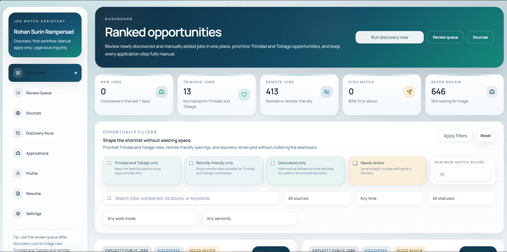
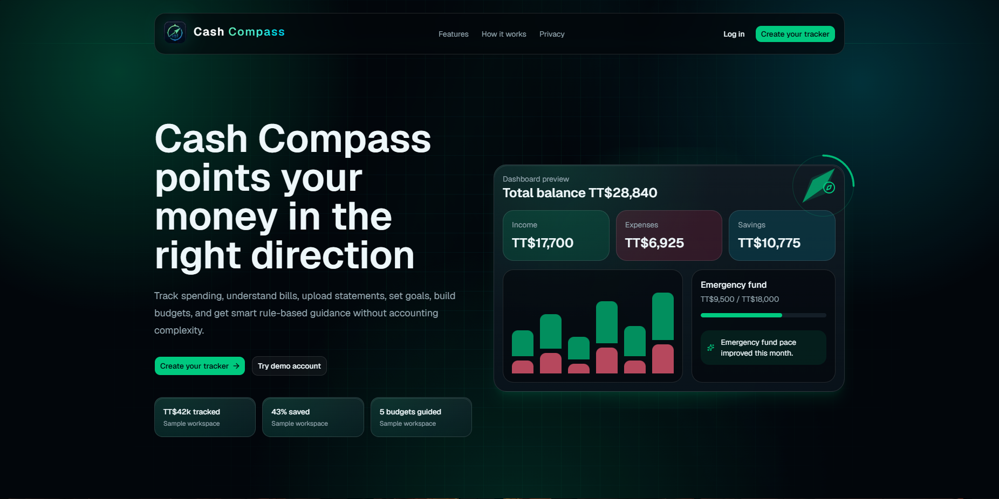

$ whoami rohan // bsc applied cs graduate $ ls ./focus › web-apps databases ai-ml › cloud support data-ops $ cat ./status ● job-ready · building practical systems ▌
I am a recent BSc (Hons) Applied Computer Science graduate through SAMS in partnership with Anglia Ruskin University. My work includes full-stack web applications, databases, dashboards, AI/ML coursework, cloud foundations, systems analysis, reporting, and documentation.
I enjoy building useful systems, organizing data, solving technical problems, and learning new tools through practical projects that connect software, operations, and support workflows.
I focus on practical systems: clean interfaces, reliable data, and workflows that make technical work easier.
A lightweight interaction layer for tools used across portfolio projects, coursework, data handling, and support-ready workflows.
Building practical web apps with clean interfaces, protected routes, database models, dashboards, and deployment workflows.
Applying troubleshooting, documentation, networking, cloud foundations, and user-focused problem solving to support work.
Working with SQL, spreadsheets, CSV imports, structured records, dashboards, and clear reporting for decision support.
Bringing organized documentation, process thinking, attention to detail, and technical literacy to entry-level operations roles.
MatchIQ is an AI job matching assistant built with Next.js, TypeScript, Tailwind CSS, Prisma, and PostgreSQL. It focuses on dashboard intelligence, discovery workflows, resume-aware scoring, match calibration, and user-controlled job tracking.

Cash Compass is a full-stack personal finance tracking web app built with Next.js, TypeScript, Tailwind CSS, Prisma, and Neon PostgreSQL. It includes onboarding, secure authentication, protected dashboard routes, income and expense tracking, bill management, savings goals, analytics, CSV import, export features, and a polished fintech-style interface deployed on Vercel.

Fitness Central is a PHP/MySQL fitness tracking web application developed as a final-year project. It includes login and registration, workout logging, weight tracking, goal management, an exercise guide, 3NF database design, system analysis, and project documentation.
Completed BSc (Hons) Applied Computer Science through SAMS in partnership with Anglia Ruskin University, with coursework and projects across software engineering, web development, databases, AI, image processing, cloud computing, and data handling.
Completed final-year and academic systems work including Fitness Central, Velocity Motors, Toyota database projects, Mandy’s Hardware inventory/client management system, network topology, subnetting, server roles, VPNs, security, Cisco IOS concepts, and IoT risks.
Hands-on work with full-stack dashboards, Jupyter Notebook machine learning workflows, MATLAB leaf morphometric analysis, AWS IAM/VPC/EC2/RDS/EBS practice, and troubleshooting-oriented cloud concepts.
Seeking roles in software development, IT support, data/reporting, technical support, admin, operations, database support, cloud foundations, and general entry-level work where technical literacy and practical problem solving help.
Open to software development, IT support, data/reporting, technical support, admin, operations, database, cloud foundation, and general entry-level roles. Contact me for opportunities, collaborations, or project questions.